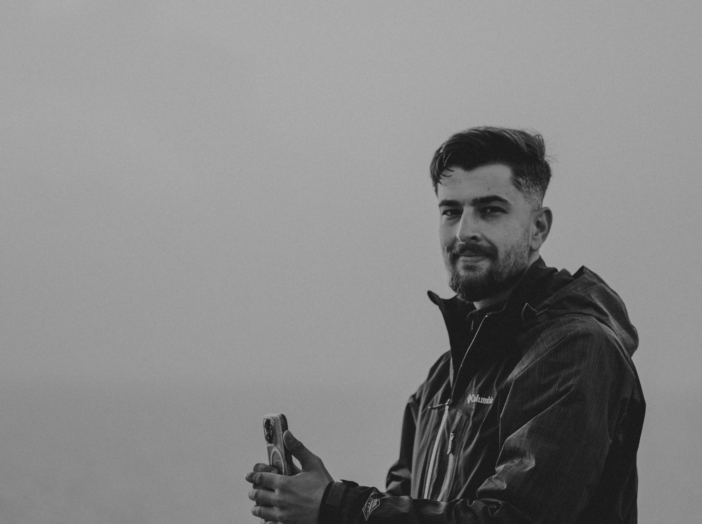

AI Creator · Creative Director · Photographer
I build visual worlds, from moodboard and look development to final image and film, with a camera in one hand and generative models in the other.
Four spec campaigns, each a complete brand world with its own product, casting, light, location, typography and edit, created end‑to‑end with generative image and video tools.
Case study · 2022 to present
Documentary series · Israel, 2023
A personal record of the weeks that followed. Not a political statement, but a study of grief, resilience and identity as they surfaced in public space.
The day began with sirens, phone calls and footage that didn't stop coming, while a few streets away a synagogue was still celebrating Simchat Torah. In the weeks after, Tel Aviv turned its squares and boulevards into vigils: teddy bears left on benches, rows of empty yellow chairs, handmade posters on every pole. Further south, soldiers, roadblocks and armour. These photographs hold both.
The eye behind the prompts. Light, gesture and atmosphere: the same instincts I bring to directing and judging generated work.

I'm an AI creative designer who learned to see through a camera and now builds whole visual worlds with generative models.
Over the past year, AI has moved to the centre of my work. Before that, I spent years behind the camera, shooting and directing for luxury, fashion and lifestyle brands, musicians and creators. That work taught me how a brand should feel and how to get there through light, styling and story. As the tools advanced, I realised that being a visual creator now means going beyond what I can do with a camera and a good eye. So I started building with AI, testing its limits and learning how far I could push it, until I was making full commercials from first idea to final edit.
What drives me is the shift happening right now. When anyone can generate an image, taste, judgement and a clear point of view are what set the work apart. I want to bring real-world craft into these tools and use them to create work that feels human, intentional and alive. It's what I want to be doing every day: building visual worlds, iterating fast, and finding out what these tools can really do.
For Keyzar Jewelry, where I've led the visual identity since 2022, I'm now designing AI workflows that sit alongside the shoot, generating campaign concepts, product scenes and ad variations that stay consistent with a look I built by hand. Knowing how the brand should feel lets me direct the models with intent, and judge what they produce with a critical eye.
That eye comes from the camera. Years of photography and filmmaking (fashion editorials, luxury product work, street and documentary series) taught me light, composition, texture and emotion. I bring all of it to every prompt, every frame I keep and every frame I throw away. I care more about honest feeling than flash: does it carry emotion, does it hold together as a world, does it feel true to the brand?